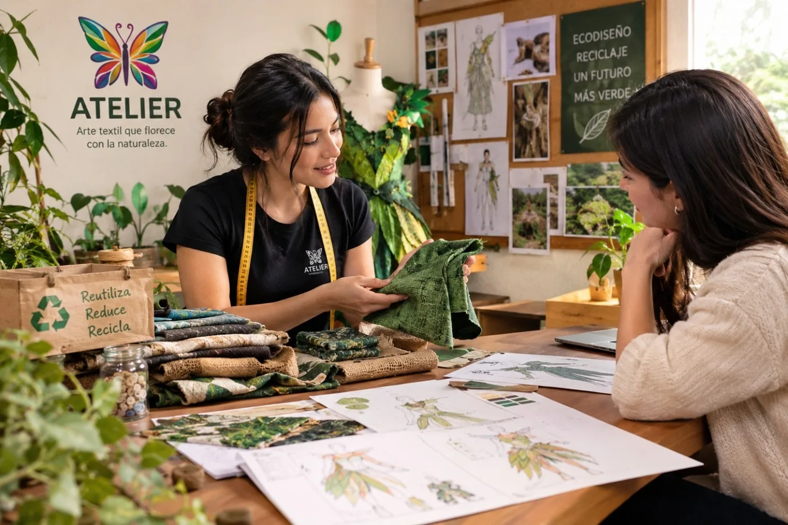

Catálogo digital por colecciones
Organizar las piezas por fantasía, botánica, aves y ecodiseño; incluir fotografías, disponibilidad, medidas y condiciones de alquiler.
Impacto: facilita la elección del vestuario.Estas propuestas son recomendaciones complementarias, desarrolladas a partir de la identidad, los servicios y los canales descritos en el documento.

Las ideas siguientes son sugerencias de mejora; no se presentan como acciones ya ejecutadas.
Organizar las piezas por fantasía, botánica, aves y ecodiseño; incluir fotografías, disponibilidad, medidas y condiciones de alquiler.
Impacto: facilita la elección del vestuario.Crear un formulario breve para fecha, evento, estilo, talla y datos de contacto, con confirmación de disponibilidad por WhatsApp.
Impacto: mejora la atención y reduce dudas.Publicar videos cortos de bocetos, confección, movimiento de alas, pruebas y transformaciones antes/después.
Impacto: demuestra el valor artesanal.Mostrar ejemplos concretos de reutilización de retazos y materiales, evitando afirmaciones ambientales que no se puedan comprobar.
Impacto: fortalece credibilidad.Solicitar comentarios y, con autorización, compartir fotografías de clientes y experiencias para construir comunidad.
Impacto: confianza y recomendación.La coherencia entre el vestuario, la atención, la identidad y la comunicación hace memorable a Atelier.